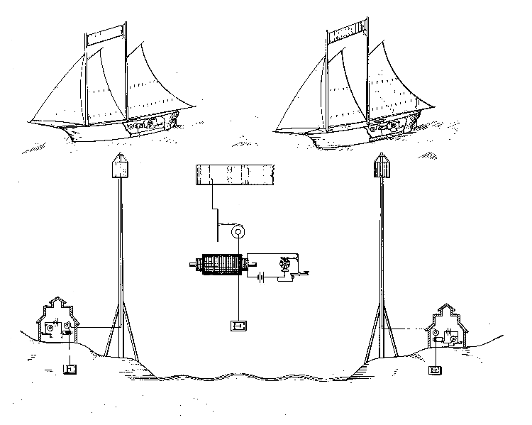

Invención de la radio


Musica de radio antigua
Antecedentes
Antes del descubrimiento de las ondas electromagnéticas y del desarrollo de la comunicación por radio, se propusieron muchos sistemas de telégrafos inalámbricos. Los primeros investigadores no lograron avances considerables al no descubrir o no comprender los efectos físicos responsables de transmitir las señales.
En 1872, William Ward obtuvo una patente para un sistema de telegrafía inalámbrica en el que teorizaba que las corrientes de convección de la atmósfera podían transmitir señales como un cable telegráfico. Esta idea fue seguida por Mahlon Loomis, que consideraba el uso de electricidad atmosférica para reemplazar el cable aéreo. Ambas ideas mostraban falta de sustento en teorías científicas.
En la década de 1880, Thomas Edison patentó un sistema de inducción electromagnética para que saltaran señales entre un tren en marcha y los cables de telégrafo paralelos a la vía. La idea fue ampliada por Nathan Stubblefield entre 1885 y 1892 y por William Preece; este último logró en 1889 transmitir información de señal Morse a través de 1,6 km de agua.
Patente de Thomas Edison para la comuniación inalámbrica barco-costa[4].
En 1880, Alexander Graham Bell y Charles Sumner Tainter registraron patentes para un fotófono, el cual fue el primer método de transmisión de sonido mediante un haz de luz, lo que les permitió enviar el primer mensaje sin el uso de cables.